What do you need to solve right now?
Write the task, not the name of the tool. 42 ready tools, no sign-up, running in your browser.
What people usually ask for
Pick up where you left off
Categories
See all
Money and pricing
Sales and proposals
Math and conversion Dates and hours
Text
PDF Documents
Spreadsheets and data
Images, audio and video
Development Passwords and security
HR and work
Stock and logistics
Marketing Productivity Study
Craft, home and buildingReady to use
42 of 208 tools in the catalog
The others are in the catalog with a full sheet of what they will do. None of them opens an empty screen.
Questions from people arriving now
Do I need to create an account?
No. Every tool in the portal works without signing up. Favorites and history are kept in your own browser.
Are my files sent to any server?
No. The portal is a static site: processing happens in your browser. Each tool says so on its sheet, and if one ever needs a server, the notice will appear before you send anything.
Why do some tools appear as "planned"?
Because they are not implemented yet. We prefer to show the sheet of what they will do rather than open an empty screen. Only a tool that opens, validates input, calculates, handles errors, exports what it promises and has an automated test gets the ready badge.
Can I use it on my phone?
Yes. The portal was designed for the small screen first, with bottom navigation and fields the keyboard does not cover.